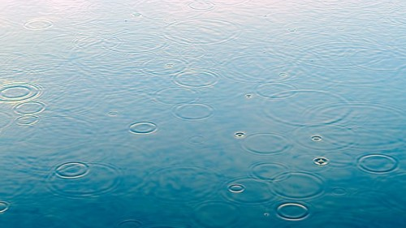
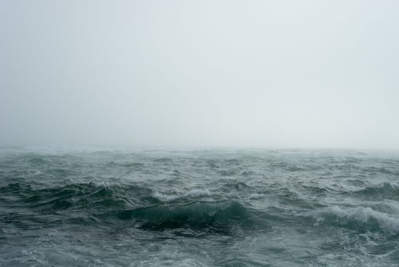

Vær i Norge
Vi har et spesielt forhold til vær i Norge. Skadefryd og trass kan se ut til å være bærende egenskaper for å holde ut i de norske værforholdene. Skadefryd ved å glede seg over andre landsdelers evigvarende regnvær, og trassen i at vi bruker naturen til aktivt friluftsliv uavhengig av været på utsiden av huset.
"Det fins ikke dårlig vær - bare dårlige klær" er et utslitt begrep i Norge. Nordmenn går toppturer i snø, regn og kuling. Klærne bidrar til at en hver tur ut føles som en vakker sommerdag.
Værrekorder
Matre i Hordaland har den norske regn-rekorden med 229,6 millimeter på ett døgn, målt 26. november 1940.
Steder som har flest døgn med orkan i middelvind:
- 16 døgn i 1971 – Fannaråki, Sogn og Fjordane
- 12 døgn i 1975 – Fannaråki, Sogn og Fjordane
- 10 døgn i 1989 – Kråkenes fyr, Sogn og Fjordane
- 8 døgn i 1983 – Kråkenes fyr, Sogn og Fjordane
Alle snakker om været - og å ligge på ryggen i gresset og studere skyene er en hyggelig aktivitet.
Det finnes mange forskjellige skytyper - noen er illevarslende og varsler om uvær, mens andre er myke
og ser ut som små lam som hopper over himmelen.
Vann er den eneste kjemiske forbindelsen i atmosfæren som naturlig finnes i tre aggregattilstander: Som gass (vanndamp),
væske (vanndråper) og fast form (is). I større eller mindre grad finnes vanndampen over alt, men er usynlig.
Først når vanndamp kondenserer dannes det synlige vanndråper. Når sollys treffer vanndråper vil de spre lyset ulikt
avhengig av størrelsen på dråpene.
Skyenes form, høyde og utseende sier noe om stabilitetsforholdene der de dannes, og vil ofte være en indikator
på kommende værutvikling. Vi har forskjellige nedbørtyper bundet til hvilke skyer nedbøren kommer fra.
| Ulike skyformasjoner: |
||
|---|---|---|
| Latinsk navn: |
Norsk navn: | Høydelag: |
| Cirrus |
Fjærskyer |
Høye |
| Cumulus |
Haugskyer | Lave |
| Nimbostratus |
Nedbørsskylag | Midtre |
| Cirrocumulus |
Makrellskyer | Høye |